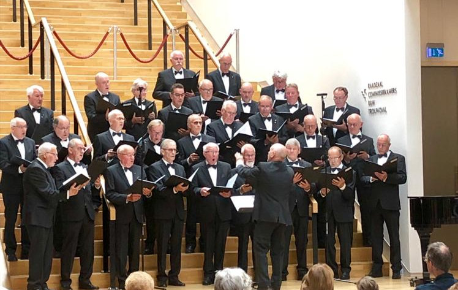
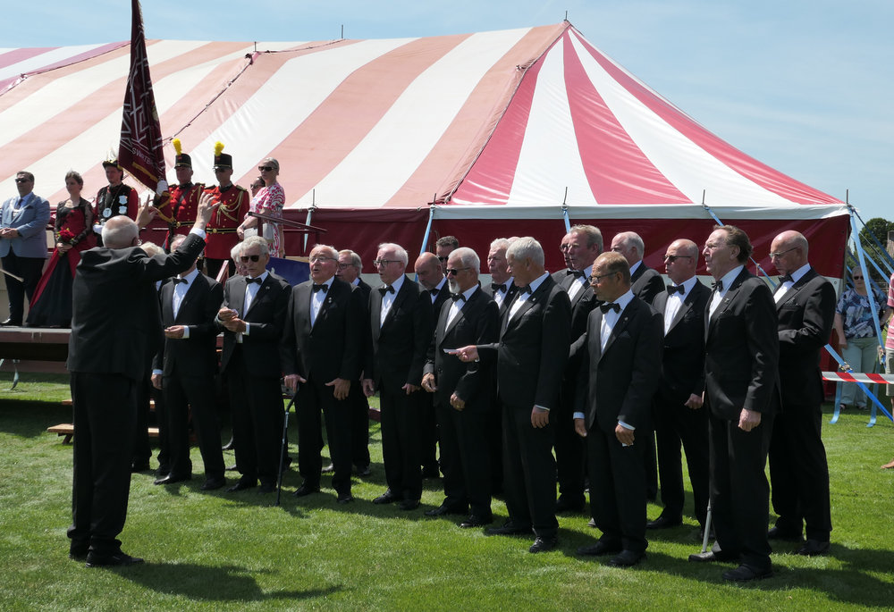
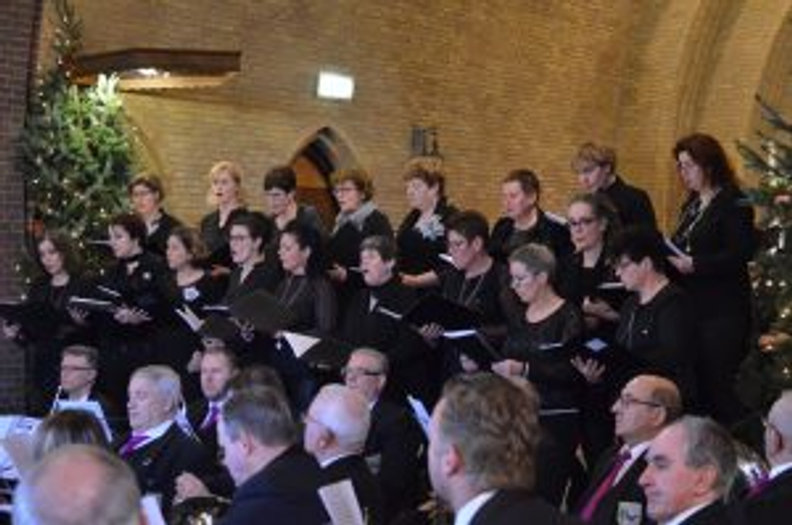
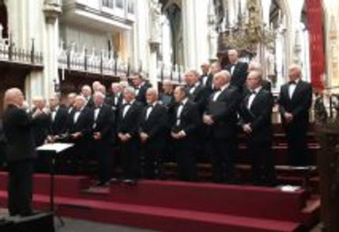
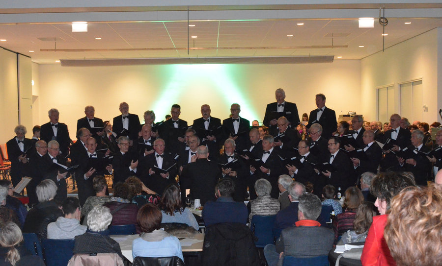
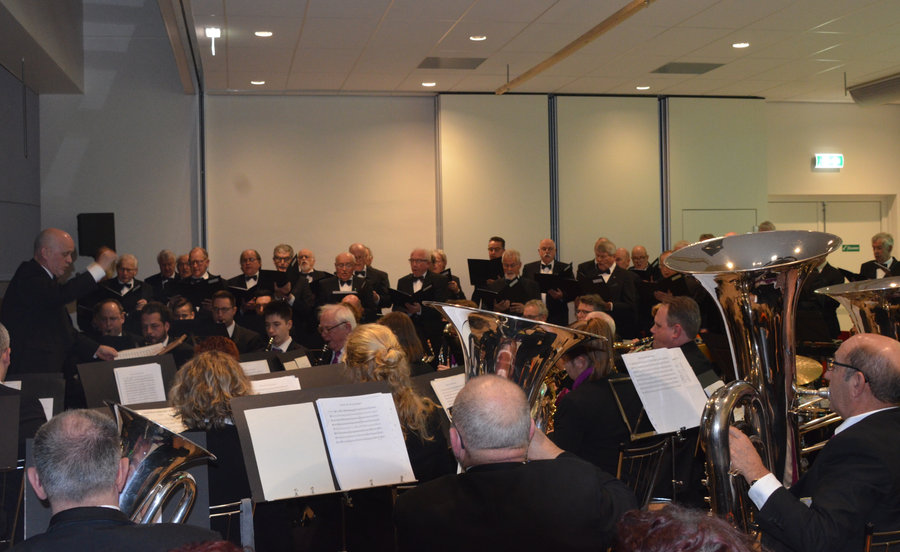
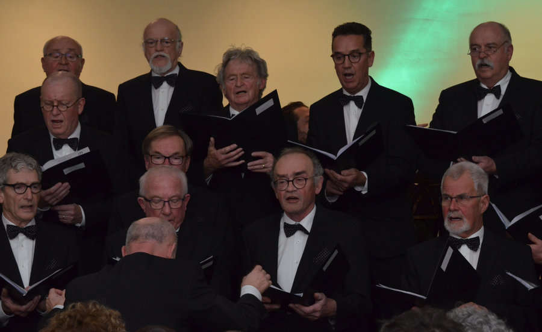

26 oktober 2025
Herfstconcert in de Corneel
Met gemengd koor Con Amore uit Baexem en trompettist Robin Peeters. Afgesloten met 't Veldboeket en Wie sjoeën ós Limburg is.
Agenda
[DD]
[maand jaar]
[Locatie] · [aanvang] uur. Een korte beschrijving van het optreden en wie er meewerken.
[DD]
[maand jaar]
[Locatie] · [aanvang] uur. Een korte beschrijving van het optreden en wie er meewerken.
Optredens worden ook bekendgemaakt via andere media. Houd deze agenda in de gaten of neem contact op met het secretariaat.
Vaste momenten
Ceciliafeest
Jaarlijks in november, met huldiging van de jubilarissen.
Herfst- of winterconcert
Jaarlijks in de Corneel in Swartbroek, met gastkoren en solisten.
Fietstocht
Vóór de zomervakantie sluiten we het seizoen af met een fietstocht en barbecue.
Dodenherdenking
Op 4 mei zingen we bij de herdenkingsplechtigheid.
Terugblik
26 oktober 2025
Met gemengd koor Con Amore uit Baexem en trompettist Robin Peeters. Afgesloten met 't Veldboeket en Wie sjoeën ós Limburg is.

10 en 11 mei 2025
Twee uitverkochte avonden in het Franciscushuis, samen met het Weerter Mannenkoor en Harmonie Heilig Hart. 80 jaar vrijheid.

17 december 2023
Kerstconcert in het MFA Swartbroek met Cantarella, Harmonie St. Cecilia en soliste Veerle Henkens. Burgemeester Vlecken verraste het koor.

25 juni 2023
Ook dit jaar mocht het koor tijdens het Cultureel Lint enkele liederen opvoeren in de hal van het gemeentehuis van Weert. Eerder ook op 22 september 2019.

17 juli 2022
Op een warme dag in Swartbroek luisterde het koor de opening op. Het Limburgs volkslied werd ten gehore gebracht.

15 december 2019
Samen met damesensemble Cantarella en jongerenkoor Cantarella verzorgde het mannenkoor een mis tijdens de Kerst-inn.

3 oktober 2019
Een optreden in de Sint-Janskathedraal, en daarna een mooi dagje Den Bosch.

24 maart 2019
Het koor luisterde de viering van het 80-jarig bestaan van Stichting De Aldenborgh op. Het boek "Weert. Parel van de heide" van Frits Nies werd gepresenteerd; we sloten af met het stedenlied.

29 december 2018
In samenwerking met de harmonie en gemengd koor Mes Amis, beide uit Koningsbosch.

13 oktober 2018
Het koor gaf een concert in het Belgische Lier en maakte er een uitstapje van langs verschillende bezienswaardigheden.

14 oktober 2017
Lovende woorden na het optreden op het mannenkorenfestival van de KNZV. Terug te kijken op de Facebookpagina van de KNZV.
Uit ons repertoire
Nearer, My God, to Thee · Homeward Bound · The Sound of Silence · Bring Him Home · When I'm Sixty-Four · Blowing in the Wind · Da te mogu pismom zvati · In de stille Kempen · Het Slavenkoor · Hinematov · Dona nobis pacem · Hemel en aarde · 't Veldboeket · Plaisir d'amour · Hallelujah · The Piano Man · Ave Maria (in dialect) · Leedje van Swartbroek · Wie sjoeën ós Limburg is
Jubileum-cd
In 2023 nam het koor onder leiding van Paul Koolen een cd op. Die is, net als het jubileumboek, te koop bij de leden en bij Bi-j Sanne in Swartbroek.